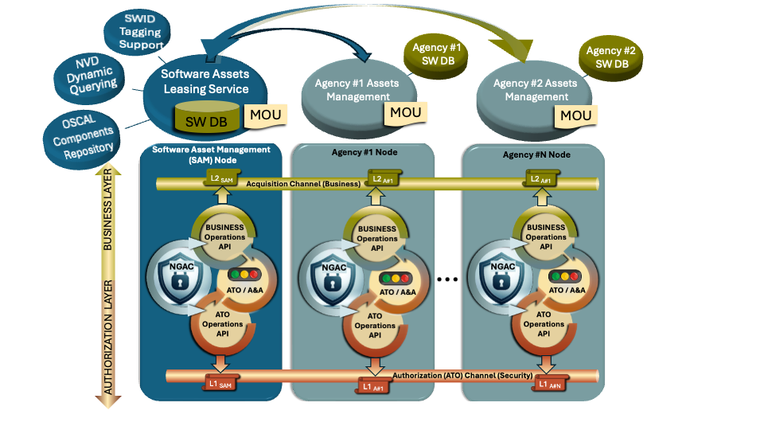

ABOUT BLOSS@M
BloSS@M focuses on a coordinated approach for managing software assets across U.S. Government agencies. Rather than relying on independent, agency-specific procurement and license management processes. The BloSS@M model explores a software leasing service in which blockchain technology is used to record software asset lifecycle information and to support the controlled distribution of software usage rights to authorized users.
The BloSS@M model is intended to address long-standing challenges associated with fragmented software procurement, cost, and license management, including limited visibility into software acquisition and usage across agencies. By supporting shared visibility and coordinated management, the proposed solution seeks to enable improved asset accountability, more informed contract negotiations, and enhanced software supply chain risk management. Blockchain technology is used to support these objectives in environments where participating departments, agencies, vendors, and publishers may not fully trust one another.

BloSS@M's permissioned blockchain requires two distinct private channels, each governed by its own set of smart contracts which implements NGAC:
- Authorization channel: Dedicated to the assessment and authorization (A&A) process, where peer nodes prove and continuously maintain their security posture in line with the Federal Information Security Modernization Act (FISMA)
- Assets channel: Focused on the core business functions of BloSS@M, supporting the implementation of its operational and technical capabilities.